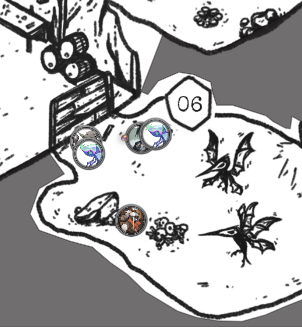
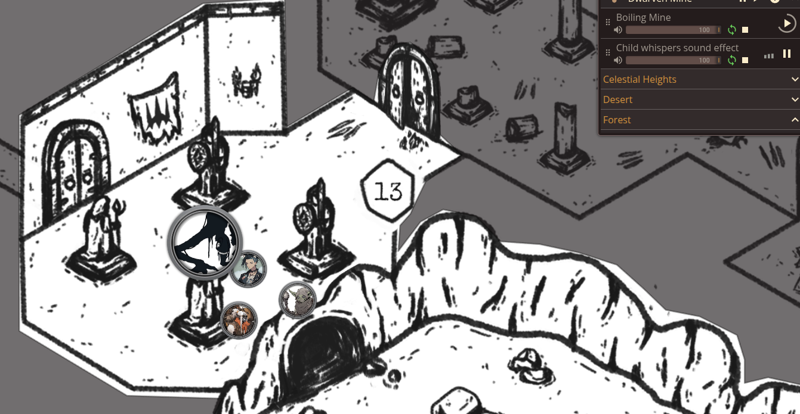

We’re back with Episode 46 of BREAK!!: The Wandering Trio. A light one in terms of lore and content but boy-o was it a fun Adventure Site crawling one, capstoned by high-level magic users vs. some ‘lil bugs. First a recap of where we are and then into it. Previous report here.
The Mines
The party has traveled to the mining site of the hastily proclaimed “doomed expedition” by the other Gobbos in the Den of the Half-Knowing Ones. They are on the lookout for two particular things - 1) some Rings of Fleshwarp that enable quickly traveling to other Calian Sigil sites throughout the isle (insofar - one within the Cage of Valigarmanda and one in an old dead Bio-Titan underneath their home village, The Celestial Bazaar) and 2) a Star Gem that was claimed to have been stolen from Sprick, the Vice Lead Architect, by Spruck, the Lead Architect.
Here was the last explored state of the map, and where we pick up from today:

Bugs’ll Getcha
Their immediate next move was loudly busting down the boards to Room 08 where they noted some Shade Iron ore veins and dozens and dozens of small tunnels burrowed into the walls. They didn’t have much time to contemplate that note, however, as the Bizzer Swarms lying in wait Ambushed them. Bizzer Swarms are only a Rank 2 Boss but I have been excited to throw them at the party for quite some time now.

Abra and Lookus are quite heavily reliant on their magical abilities and so being able to mess with that directly gave me great joy. To beef up the encounter more, I made it so the Bizzers would automatically deal 1 Damage at the start of their Turn, adding time pressure beyond just some irritating mana-disabling bugs. What I did not expect, however, was it to be just so effective on them.
Some highlights:
- The magical party members, immediately swarmed, descended into panic as Lookus couldn’t summon his beloved Wrath’s Blade and Abra’s whole kit gone.
- In the panic, Abra unleashed his Junk Trophy System into the area with everyone in it. Lookus and Gack both failed, getting blown to the ground by a torrent of scrap.
- It was a good lesson in the brutal trappings of the Inventory System, taking multiple Actions-worth to pull out old, never-used-before back-up weapons from Backpacks.
- Gack, using Always Prepared, pulled out a can of highly-toxic Bug Repellent (reflavored Solvent) and was able to help with the swarms.
Junkyard goblins have found a means of recreation with these gadgets in a game they call "Rocket Jump".
- Once per Fight, you can unload the Trophy System, doing one of the following:
- Attack all Creatures in the same Area as you, dealing 1 Heart of Damage on a failed Deftness Check.
- Parry 1 Missile Attack. This includes Spells or any special Attacks that require an Attack roll.
- If a Small Species uses this, they must make a Deftness Check or be thrown an Area away and be Toppled.
It was all a big kerfuffle of dealing with inventory, ineffectually swatting at the swarm, and ticking down Hearts. After dozens of sessions, Abra finally took a second Injury in the campaign! An Armor Crash meant that his precious Shadowed Light Armor was destroyed…its very essence consumed by the Bizzers. He’s got an Anti-Hazard backup though so he’s fine.
Of the many far worse threats I’ve thrown at them (big boss fights notwithstanding), this one really got ‘em spooked and gave me much joy. They spent a minute in this room noting it was peculiar that Shade Iron was here when it was supposed to be a Vain Stone mine. The title of the episode comes from Lookus staring at the caved in passage of the room and confidently stating “I am no biologist but that looks like a natural cave-in.” To which the others retorted a confused “…huh?”
Moving on, they took the left fork into Room 12 and, with Cautious Movement, dodged the sound-triggered ceiling collapse (Falling Debris CLICK! trap). Not much in this room itself but I was quite enthused by my description of the ancient Dwarven corpses in the room. As Dwarves as carved from stone itself in BREAK!! and crack and crumble as they age, I thought it fun that these Dwarves prematurely life-drained by the Demon within kept their forms in tact over the Aeon since and have simply eroded away into smooth stones. They’d be easy to miss as just another rock if not for their differing composition and tools nearby.
To clarify, the mine here has had two independent expeditions - one Dwarven-based one within the early 4th Aeon after the fall of Calian and the more recent one from the Den. Admittedly, I have done no backstory prep on what this original expedition was or their whole vibe but no questions asked so far, no harm done. If they probe, I’ll just make something up and go with it.
Arrival of the Creature
Of course within Room 12 is the very obvious “breakthrough” Spruck’s journal remarked. Via Cautious Movement, the dim light of Lookus’ Lumi-Slime Lantern let them sneak a peek that the floor material beyond its precipice was of a markedly different material than the natural mine - smooth marble. Deciding to tackle that immediately instead of explore the right-hand side, they walked through and came upon the reverence hall of the High Calian Fleshwarper, depicting several amethyst statues of themself donning different mantles within the Empire. The players distinctly noted the tattered Calian Empire flag on the wall…
…and became entranced by my throwaway description of the magically lit sconce on the wall glowing a villainous crimson red. So entrenched were they in this conversation amongst themselves that it gave me ample opportunity to really nail my best monster reveal yet!
For context, throughout sessions, I often have relevant soundtrack playing as I’ve noted with the Ynn Garden waltz. For the main hubs of the island, I have their own theme songs to associate the vibes there and it has been really sick to have everyone’s appreciation of it as the campaign continues and we go back to previous locations. So for this session I had some mildly eerie music playing - Hollow Knight’s Resting Grounds with a cave waterdrop sfx - since nothing was truly horror yet. As their conversation about the stupid sconce continued, however, I slowly increased the layered volume of some horror child whispering sfx behind it without saying anything.
This culminated into a brilliant scene when Abra’s player (who is always baked in our sessions so the horror tropes get him good) stopped talking and said “hold on, do you guys fucking hear that, what is thAT?”. Immediately after I described the dripping sensation as no longer just water drops nearby but rather crawling up Abra’s neck, as he looked up and saw the demonic fleshwarped horror stuck on the ceiling above them - the ichor-y silhouette of a whispering young child standing next to it.

We ended there a bit early given it’ll be a longer fight and I wanted to let them stew on that for the week. To my amusement, all the players noted how well that sfx trick worked for the horror vibes and were impressed with the “immersion” of the background sounds being used to key that something was wrong in the game itself.

Just wait ‘til they find out the damn thing respawns, huh? Thanks for reading!
Comments